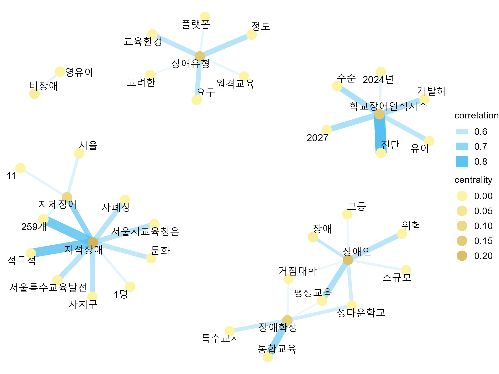
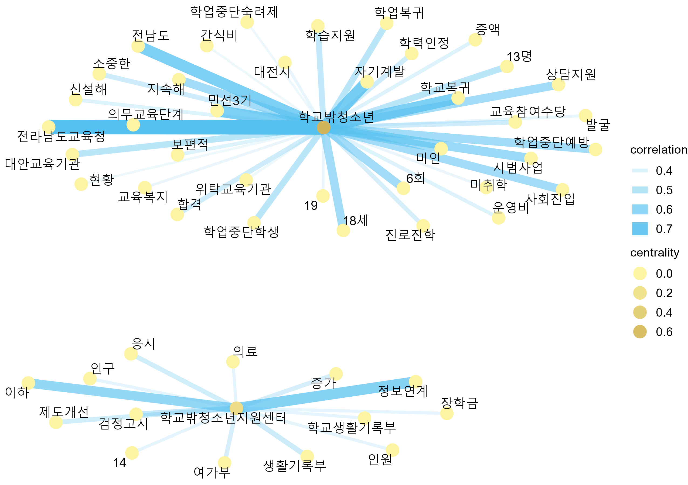

# install.packages(c("readxl", "magrittr", "dplyr", "tidyr", "stringr", "tidyverse", "tidygraph", "igraph", "ggraph", "widyr", "ggplot2"))
# install.packages('devtools')
# devtools::install_github('haven-jeon/KoNLP')
# devtools::install_github("mshin77/TextAnalysisR")텍스트 마이닝을 활용한 미래 특수교육 발전 방안에 따른 학습장애 학생 교육 방향에 대한 인식 분석
Analysis of Perception on the Direction of Education for Students with Learning Disabilities Regarding Future Special Education Development Plans Using Text Mining
1.1. R 패키지 설치
1.2. R 패키지 불러오기
suppressPackageStartupMessages({
library(readxl)
library(magrittr)
library(dplyr)
library(tidyr)
library(stringr)
library(KoNLP)
library(tidytext)
library(tidyverse)
library(DT)
library(tidygraph)
library(igraph)
library(ggraph)
library(widyr)
library(ggplot2)
library(TextAnalysisR)
})2.1. 엑셀 파일 열기
data_riss <- read_excel("data/ld_policy_riss.xlsx")
data_riss <- data_riss %>%
mutate(document = paste(저자, "(", 발행연도, ")", sep = "")) %>%
select(document, everything())
sixth_sped_riss <- data_riss %>% filter(policy_topic == "6차특수교육발전계획")
support_center_riss <- data_riss %>% filter(policy_topic == "기초학력지원센터_특수교육지원센터")
out_of_school_riss <- data_riss %>% filter(policy_topic == "학교교육_학교밖_교육연계")2.2. 텍스트 열 선택
Code
sixth_sped_riss_text <- sixth_sped_riss %>%
select("제목", "주제어", "국문 초록 (Abstract)") %>%
unite(
col = combined_text,
sep = " ",
remove = FALSE
)
sixth_sped_riss_data <- left_join(sixth_sped_riss, sixth_sped_riss_text, by = "제목") %>%
select(-ends_with(".y")) %>%
rename_with(~ sub("\\.x$", "", .), ends_with(".x"))
support_center_riss_text <- support_center_riss %>%
select("제목", "주제어", "국문 초록 (Abstract)") %>%
unite(
col = combined_text,
sep = " ",
remove = FALSE
)
support_center_riss_data <- left_join(support_center_riss, support_center_riss_text, by = "제목") %>%
select(-ends_with(".y")) %>%
rename_with(~ sub("\\.x$", "", .), ends_with(".x"))
out_of_school_riss_text <- out_of_school_riss %>%
select("제목", "주제어", "국문 초록 (Abstract)") %>%
unite(
col = combined_text,
sep = " ",
remove = FALSE
)
out_of_school_riss_data <- left_join(out_of_school_riss, out_of_school_riss_text, by = "제목") %>%
select(-ends_with(".y")) %>%
rename_with(~ sub("\\.x$", "", .), ends_with(".x"))2.3. 단어 빈도-역문서 빈도 분석에 필요한 함수 정의
Code
# 불필요한 패턴 제거 함수
# This function is to remove specific patterns from a text column.
#
# @param {data} The input dataframe.
# @param {text_col} The name of the text column in the dataframe.
# @param {...} Additional arguments to be passed to the function.
# @return The cleaned dataframe with an additional processed_text column.
rm_patterns <- function(data, text_col, ...) {
homepage <- "(HTTP(S)?://)?([A-Z0-9]+(-?[A-Z0-9])*\\.)+[A-Z0-9]{2,}(/\\S*)?"
date <- "(19|20)?\\d{2}[-/.][0-3]?\\d[-/.][0-3]?\\d"
phone <- "0\\d{1,2}[- ]?\\d{2,4}[- ]?\\d{4}"
email <- "[A-Z0-9.-]+@[A-Z0-9.-]+"
hangule <- "[ㄱ-ㅎㅏ-ㅣ]+"
punctuation <- "[:punct:]"
text_p <- "[^가-힣A-Z0-9]"
cleaned_data <- data %>%
mutate(
processed_text = !!sym(text_col) %>%
str_remove_all(homepage) %>%
str_remove_all(date) %>%
str_remove_all(phone) %>%
str_remove_all(email) %>%
str_remove_all(hangule) %>%
str_replace_all(punctuation, " ") %>%
str_replace_all(text_p, " ") %>%
str_squish()
)
return(cleaned_data)
}
# 용언과 체언 추출 함수
# This function is to extract morphemes (noun and verb familiies).
#
# @param {data} The input data to be processed.
# @param {text_col} The name of the text column in the dataframe.
# @param {...} Additional arguments to be passed to the function.
# @returns {pos_td} The processed data containing the extracted nouns, adjectives, and verbs.
extract_pos <- function(data, text_col, ...) {
pos_init <- data %>%
unnest_tokens(pos_init, text_col, token = SimplePos09) %>%
group_by(document) %>%
mutate(pos_n = 1:n())
noun <- pos_init %>%
filter(str_detect(pos_init, "/n")) %>%
mutate(pos = str_remove(pos_init, "/.*$"))
verb <- pos_init %>%
filter(str_detect(pos_init, "/p")) %>%
mutate(pos = str_replace_all(pos_init, "/.*$", "다"))
pos_td <- bind_rows(noun, verb) %>%
arrange(pos_n) %>%
filter(nchar(pos) > 1) %>%
tibble()
return(pos_td)
}
# 단어 빈도-역문서 빈도 계산 함수
# Calculates the term frequency-inverse document frequency (TF-IDF) for a given dataset.
#
# @param data The dataset to calculate TF-IDF on.
# @param pos The column name representing the term positions.
# @param document The column name representing the documents.
# @param ... Additional arguments to be passed to the function.
# @return A datatable displaying the TF-IDF values, sorted in descending order.
calculate_tf_idf <- function(data, pos, document, ...) {
tf_idf <- data %>%
bind_tf_idf(pos, document, n) %>%
arrange(desc(tf_idf)) %>%
mutate_if(is.numeric, ~ round(., 3))
tf_idf_dt <- tf_idf %>%
datatable(options = list(
pageLength = 5,
initComplete = JS(
"
function(settings, json) {
$(this.api().table().header()).css({
'font-family': 'Arial, sans-serif',
'font-size': '16px',
});
}
"
)
)) %>%
formatStyle(columns = colnames(.$x$data), `font-size` = "15px")
return(tf_idf_dt)
}2.4. 6차특수교육발전계획 단어 빈도-역문서 빈도
Code
sixth_sped_riss_data %>%
rm_patterns(text_col = "combined_text") %>%
extract_pos(text_col = "processed_text") %>%
count(document, pos, sort = TRUE) %>%
calculate_tf_idf(term = "pos", document = "document")2.5. 기초학력지원센터 특수교육지원센터 단어 빈도-역문서 빈도
Code
support_center_riss_data %>%
rm_patterns(text_col = "combined_text") %>%
extract_pos(text_col = "processed_text") %>%
count(document, pos, sort = TRUE) %>%
calculate_tf_idf(term = "pos", document = "document")2.6. 학교교육 학교밖 교육연계 단어 빈도-역문서 빈도
Code
out_of_school_riss_data %>%
rm_patterns(text_col = "combined_text") %>%
extract_pos(text_col = "processed_text") %>%
count(document, pos, sort = TRUE) %>%
calculate_tf_idf(term = "pos", document = "document")3.1. 엑셀 파일 열기
data_news <- read_excel("data/ld_policy_news.xlsx")
data_news <- data_news %>%
mutate(document = paste0("text", row.names(.))) %>%
select(document, everything())
sixth_sped_news <- data_news %>% filter(policy_topic == "6차특수교육발전계획")
support_center_news <- data_news %>% filter(policy_topic == "기초학력지원센터_특수교육지원센터")
out_of_school_news <- data_news %>% filter(policy_topic == "학교교육_학교밖_교육연계")3.2. 뉴스 기사 문자 길이 범위
6차특수교육발전계획
Code
# 중복 기사 확인 및 삭제
# sixth_sped_news %>% duplicated() %>% sum()
sixth_sped_news %<>% filter(!duplicated(.))
# 50자 이상의 뉴스 기사 선택 및 문자 길이 범위 확인
sixth_sped_news_filtered <- sixth_sped_news %>% filter(nchar(sixth_sped_news$article) >= 50)
sixth_sped_news_filtered$article %>%
nchar() %>%
range()[1] 118 12770기초학력지원센터 특수교육지원센터
Code
# 중복 기사 확인 및 삭제
# support_center_news %>% duplicated() %>% sum()
support_center_news %<>% filter(!duplicated(.))
# 50자 이상의 뉴스 기사 선택 및 문자 길이 범위 확인
support_center_news_filtered <- support_center_news %>% filter(nchar(support_center_news$article) >= 50)
support_center_news_filtered$article %>%
nchar() %>%
range()[1] 55 20298학교교육 학교밖 교육연계
Code
# 중복 기사 확인 및 삭제
# out_of_school_news %>% duplicated() %>% sum()
out_of_school_news %<>% filter(!duplicated(.))
# 50자 이상의 뉴스 기사 선택 및 문자 길이 범위 확인
out_of_school_news_filtered <- out_of_school_news %>% filter(nchar(out_of_school_news$article) >= 50)
out_of_school_news_filtered$article %>%
nchar() %>%
range()[1] 77 95573.3. 단어 네트워크 분석에 필요한 함수 정의
Code
# 단어 간 쌍별 상관관계 계산 함수
# Calculates pairwise correlation between data based on specified criteria.
#
# @param {data} The input data frame.
# @param {pos} The column name for grouping the data.
# @param {pattern} The pattern to match in the item1 column.
# @param {document} The column name for calculating correlation.
# @param {cor_value} The minimum correlation value to consider.
# @param {count} The minimum count of observations per group.
# @param {...} Additional arguments to be passed to the pairwise_cor function.
# @return A {filtered_data} frame containing pairwise correlations.
calculate_pairwise_cor <- function(data, pos, pattern, document, cor_value, count, ...) {
cor <- data %>%
group_by(pos) %>%
filter(n() >= count) %>%
pairwise_cor(pos, document, sort = TRUE) %>%
ungroup()
filter_meta <- cor %>%
arrange(desc(correlation)) %>%
filter(grepl(pattern = pattern, item1))
filtered_data <- filter_meta %>%
filter(correlation > cor_value)
return(filtered_data)
}
# 단어 네트워크 레이아웃 함수
# Creates a graph layout based on the provided data.
#
# @param {data} The data used to create the graph.
# @param {layout_type} The type of layout to use (default: "fr").
# @returns {layout_meta} The graph layout.
create_graph <- function(data, layout_type = "fr") {
graph_meta <- as_tbl_graph(data, directed = TRUE)
node_num <- igraph::vcount(graph_meta)
graph_meta_centr <- graph_meta %>%
mutate(centrality = centrality_degree(mode = "out") / (node_num - 1))
layout_meta <- create_layout(graph_meta_centr, layout = layout_type)
return(layout_meta)
}
# 단어 네트워크 그래프 함수
# This function takes a data frame and creates a network graph visualization.
#
# @param {data} The input data frame.
# @param {...} Additional arguments to be passed to the function.
# @returns {network_meta_gg} The network graph as a ggplot_gtable object.
plot_graph <- function(data, ...) {
network_meta <- data %>%
ggraph() +
geom_edge_link(aes(
edge_alpha = correlation,
edge_width = correlation
), edge_colour = "#56c1f0") +
geom_node_point(aes(colour = centrality), size = 5) +
geom_node_text(aes(label = name), size = 4, repel = TRUE) +
scale_color_continuous(guide = "legend", high = "#D2B55B", low = "#FCF4A3") +
theme_void(base_size = 6) +
theme(
legend.title = element_text(size = 11),
legend.text = element_text(size = 11),
legend.position = "right"
)
network_meta_g <- ggplot_build(network_meta)
network_meta_gg <- ggplot_gtable(network_meta_g)
return(network_meta_gg)
}3.4. 한글 텍스트 전처리
Code
sixth_sped_join <- sixth_sped_news_filtered %>%
rm_patterns(text_col = "article") %>%
extract_pos(text_col = "processed_text")
support_center_join <- support_center_news_filtered %>%
rm_patterns(text_col = "article") %>%
extract_pos(text_col = "processed_text")
out_of_school_join <- out_of_school_news_filtered %>%
rm_patterns(text_col = "article") %>%
extract_pos(text_col = "processed_text")3.5. 6차특수교육발전계획 단어 네트워크 시각화
Code
set.seed(2023)
sixth_sped_corr <- sixth_sped_join %>%
calculate_pairwise_cor(
pos = "pos",
pattern = "장애",
document = "document",
cor_value = 0.5,
count = 5
)
sixth_sped_gg <- sixth_sped_corr %>%
create_graph(layout_type = "fr") %>%
plot_graph()
ggsave("figure/sixth_sped_gg.png", width = 8, height = 6)
3.6. 기초학력지원센터 특수교육지원센터 단어 네트워크 시각화
Code
set.seed(2023)
support_center_corr <- support_center_join %>%
calculate_pairwise_cor(
pos = "pos",
pattern = "장애",
document = "document",
cor_value = 0.6,
count = 5
)
support_center_gg <- support_center_corr %>%
create_graph(layout_type = "fr") %>%
plot_graph()
ggsave("figure/support_center_gg.png", width = 8, height = 6)3.7. 학교교육 학교밖 교육연계 단어 네트워크 시각화
Code
set.seed(2023)
out_of_school_corr <- out_of_school_join %>%
calculate_pairwise_cor(
pos = "pos",
pattern = "학교밖",
document = "document",
cor_value = 0.38,
count = 4
)
out_of_school_gg <- out_of_school_corr %>%
create_graph(layout_type = "fr") %>%
plot_graph()
ggsave("figure/out_of_school_gg.png", width = 8.5, height = 6)
4.1. Launch and browse the TextAnalysisR app
# TextAnalysisR.app()